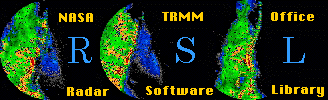

What's New??
TRMM Info
GV Data
Field Campaigns
Software
Staff
TRMM Project
TSDIS
JCET
GSFC/DAAC
FTP
    |
|  |
Current RSL Version 1.24, released 6/28/1999
By: John H. Merritt
In support of the Tropical Rainfall Measuring Mission's (TRMM) Global Validation Program, the NASA TRMM Office has developed a Radar Software Library for working with the various input radar formats. This is an object-oriented library written in C. It and other software are available via anonymous ftp.This library is an object oriented programming environment for writing software applicable to all RADAR data related to the TRMM GV effort. This library reads the WSR88D, Lassen, Sigmet, McGill, UF, HDF, RAPIC, RADTEC and native RSL file formats. Additional functions are provided to manipulate the RSL objects. Nearly all of the functions return objects. When they don't, they usually perform actions like output, making images, etc. The most general object in RSL is Radar. The structure Radar is the method used to define the ideal or universal radar representation in RAM while keeping the natural resolution of the data unchanged. More simply, Radar represents the super set of all radar file formats. The Radar structure is hierarchically defined such that it is composed of Volumes, each containing one field type. Volumes are composed of Sweeps. Sweeps are composed of Rays and Rays contains a vector of the field type. Some field types are Reflectivity(DZ), Velocity(VR), Spectrum Width(SW), etc. There are approximately 20 field types. See the Users Guide for more information. Also, check out What's New.
Indexed Reference
Download
latest version
| Format Type | Input | Output |
| Lassen | Yes | No |
| McGill | Yes | No |
| Sigmet | Yes | No |
| WSR-88D | Yes | No |
| RAPIC | Yes | No |
| UF - Universal Format | Yes | Yes |
| HDF - Hierarchical Data Format | Yes | Yes |
| RADTEC | Yes | No |
| EDGE | Yes | No |
| Otto W. Thiele | Brad L. Fisher |
| Head, TRMM Office | NASA/TRMM Office |
| NASA/GSFC/910.1 | NASA/GSFC/910.1 |
| Greenbelt, MD 20771 | Greenbelt, MD 20771 USA |
| thiele@trmm.gsfc.nasa.gov | fisher@trmm.gsfc.nasa.gov |